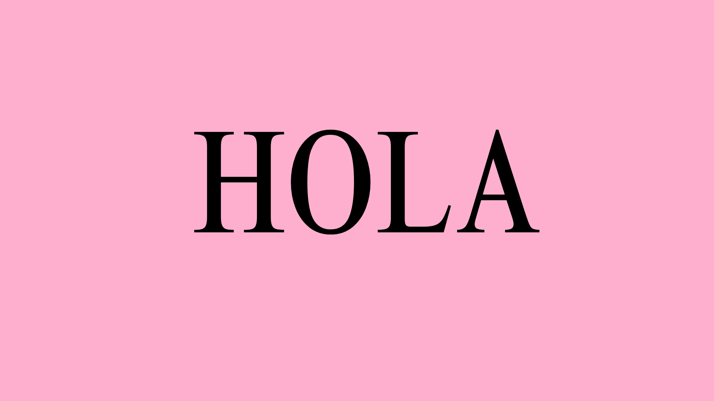

.png)
.png)
.png)
.png)
.png)
.png)
La traducción consiste en obtener un texto B a partir de un texto B, el cual se encuentra redactado en una lengua distinta a la original. Aunque hay muchos tipos de traducción, la que destaco en este breve artículo es la traducción audiovisual o TA no solo por la gran cantidad de productos que podemos obtener: doblaje, subtitulado... sino por la creatividad y originalidad que se necesita para llevar a cabo estos proyectos.
| Tipos de traducción | ||
|---|---|---|
| Subtitulación | Doblaje | Traducción Accesible |
| Voces Superpuestas | Audiodescripción | |
| Texto doblado | Traducción para sordos | |
A continuación, se muestran los procesos que se deben seguir para llevar a cabo el proceso de traducción, si quieres leerlos, solo tienes que hacer click en las imágenes.
El texto de una lengua de origen A se traduce a otra lengua de destino B. Hoy en día, la mayoría de las agencias de traducción se apoyan en herramientas que permiten agilizar el proceso (CAT tools).
El siguiente proceso es la edición, durante el cual, los lingüistas revisan la traducción inicial para buscar errores o hacer correcciones y mejorar el producto final.
Esta etapa consiste en concentrarse en el formato y verificar que todos los elementos estén en orden. Cuando todo esté lsito y revisado, ya estaría la correción completada.